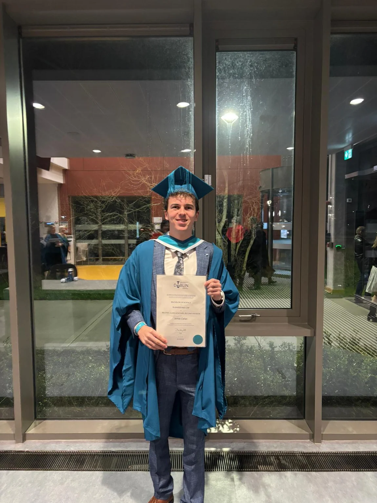
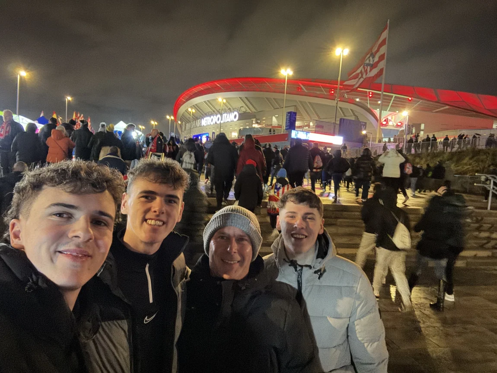
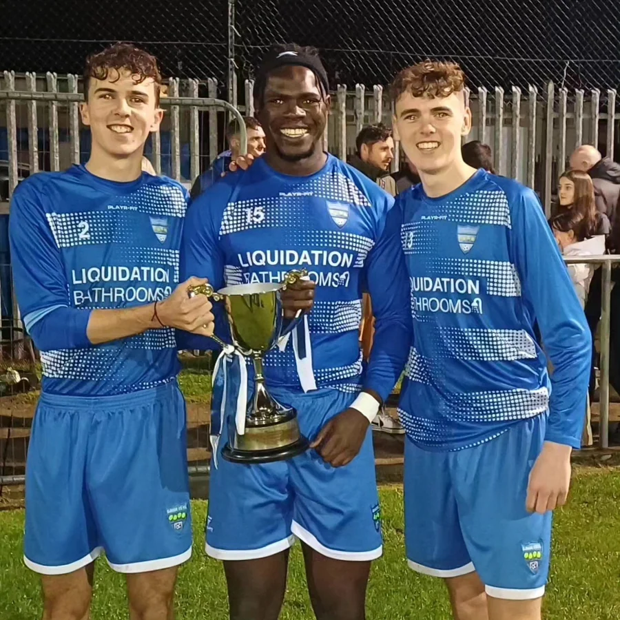

Football business, communications and the people behind the game.
I’m James Callan, based in Dublin, and my work sits across football business, communications, media and marketing. I’m interested in what happens away from the pitch as much as what happens on it: how clubs are run, how they reach supporters and how they build something that lasts.
I’ve written for RTÉ Sport, contributed to club media and built independent football projects including Touchline Sport and LOI Talk. At Boardroom Ball, I moved from writer to leading the newsletter, working across editorial planning, production and audience development. My work has included matchday content, brand concepts, communications and football business reporting.
Alongside football media, I work in the legal sector and hold a Business & Law degree from TU Dublin. I’m now studying for an MSc in Business Intelligence & Digital Marketing at Brunel University London. I also coach and scout football. The aim is to bring the football knowledge and the business thinking together, rather than pick one and leave the other behind.

Legal sector & business
Legal Assistant at FH O’Reilly & Co Solicitors since November 2025. Client-facing communication, legal administration, research and document management alongside a Business & Law degree.
Media, marketing & communications
Founder of Touchline Sport and LOI Talk; former newsletter lead at Boardroom Ball; published RTÉ Sport contributor. Experience covering editorial strategy, publishing, design and audience development.
In the game
Grassroots and academy coaching, scouting and player analysis. I’ve worked with football at different levels, which helps me understand how club departments and supporters connect.
Commercial interests
Football club business models, sponsorship activation, fan engagement and governance. My independent strategy projects explore how smaller clubs can strengthen communication and revenue opportunities.
Football Content Awards finalist.
Best New Content Creator
Recognised as a finalist in the 2026 Football Content Awards for my work creating football content. It’s a particularly lovely thing to see after putting so much time into writing, graphics and building my own projects.


Not just behind a laptop.
Football has taken me into dressing rooms, academies, press boxes and a few stadium trips I'd happily repeat. I've coached at grassroots and academy level, and completed the FAI Grassroots coaching badge.
I've also appeared on the TicketCo Podcast and The LOI Talk Pod to talk about football and the work around it.
TU Dublin
BA (Hons) Business & Law · 2025
Dissertation: Levelling the Playing Field: Using EU Competition Law to Regulate Multi-Club Ownership in Football.
Brunel University London
MSc Business Intelligence & Digital Marketing · 2026–present (in progress)
FAI Grassroots coaching badge
Completed. Practical football coaching development alongside playing and academy experience.
Additional training
PFSA talent identification and opposition analysis training, HubSpot Social Media Marketing, Google digital marketing and sports sponsorship studies.
TicketCo Podcast
Guest appearance discussing football and the work around the game.
The LOI Talk Pod
Guest appearance covering League of Ireland football.